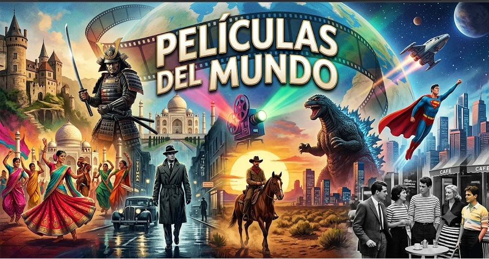

Inaguramos nuevas categorías
Películas del Mundo nace como un espacio de encuentro definitivo para los amantes del séptimo arte que buscan expandir sus horizontes más allá de las producciones comerciales de siempre. Nuestra plataforma está dedicada a explorar, clasificar y difundir la inmensa riqueza del cine global, ofreciendo un recorrido exhaustivo por una diversidad de categorías que abarcan desde los grandes géneros clásicos hasta las corrientes más alternativas e independientes del panorama internacional. Aquí, el espectador puede sumergirse en un catálogo conceptual que conecta el drama más íntimo del cine de autor europeo con la espectacularidad de las artes marciales asiáticas, el misticismo de los relatos mitológicos o la crudeza psicológica de los thrillers contemporáneos. Nos propusimos la misión de descentralizar la mirada cinematográfica habitual, sirviendo como una brújula cultural que ayuda tanto al cinéfilo empedernido como al espectador casual a descubrir verdaderas joyas ocultas de diferentes épocas, países y formatos. El corazón de este proyecto reside en entender el cine no solo como entretenimiento, sino como un reflejo directo de las identidades, realidades y fantasías de toda la humanidad. En Películas del Mundo, cada etiqueta y clasificación está pensada para guiarte en una travesía inmersiva donde conviven en armonía la nostalgia del westerm clásico, la innovación visual del cyberpunk, el impacto social de los documentales y el puro escapismo del cine de superhéroes o de catástrofes. No nos limitamos a los títulos más evidentes; nos apasiona escarbar en el cine de culto, rescatar la magia de los cortometrajes y dar visibilidad a narrativas disruptivas de latitudes que rara vez llegan a las carteleras principales. En definitiva, esta web es una invitación abierta a romper fronteras culturales a través de la pantalla, convirtiéndose en el punto de partida ideal para cualquiera que desee explorar el mapa completo de la cinematografía mundial a tan solo un clic de distancia.
Carlos M. (Madrid): ¡Por fin una web que no se limita a lo mismo de siempre! Me encanta la variedad de categorías que manejan; gracias a la lista pude descubrir subgéneros enteros de cine asiático y europeo que ni sabía que existían. Es el sitio perfecto para salir de la rutina de las plataformas de streaming habituales.
Sofía R. (Buenos Aires): Como estudiante de cine, este sitio se ha convertido en mi brújula de cabecera. La forma en que organizan todo, desde el cine de autor hasta el cyberpunk o el cine de serie B, es una joya para cualquier cinéfilo. ¡Hacía falta un rincón así en internet!.